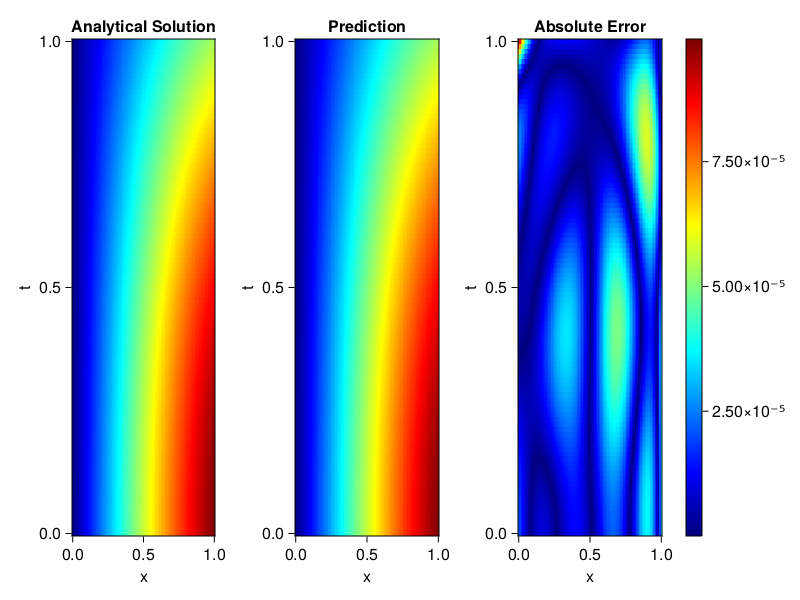
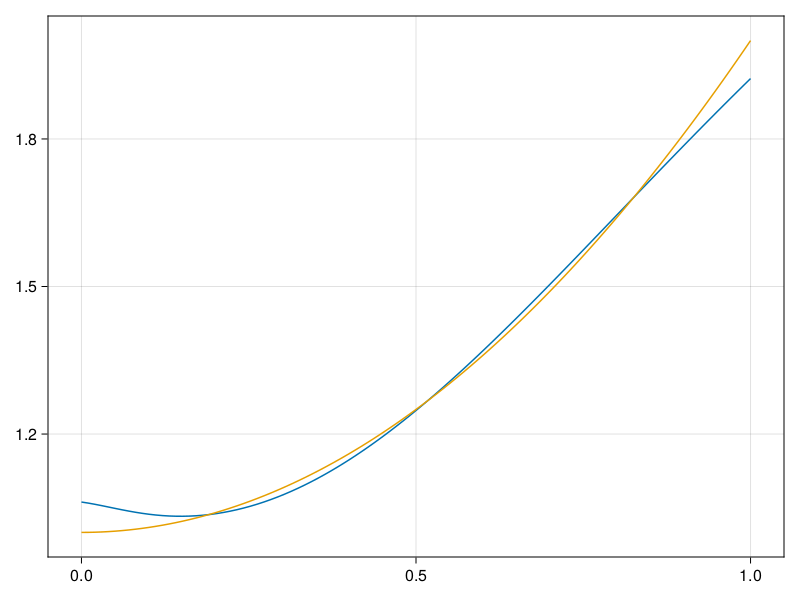

Inverse problem for the wave equation with unknown velocity field
We are going to sovle the wave equation.
using Sophon, ModelingToolkit, IntervalSets
using Optimization, OptimizationOptimJL
@parameters x, t
@variables u(..), c(..)
Dₜ = Differential(t)
Dₜ² = Differential(t)^2
Dₓ² = Differential(x)^2
s(x,t) = abs2(x) * sin(x) * cos(t)
eq = Dₜ²(u(x,t)) ~ c(x) * Dₓ²(u(x,t)) + s(x,t)
bcs = [u(x, 0) ~ sin(x),
Dₜ(u(x, 0)) ~ 0,
u(0, t) ~ 0,
u(1, t) ~ sin(1) * cos(t)]
domains = [t ∈ Interval(0.0, 1.0),
x ∈ Interval(0.0, 1.0)]
@named wave = PDESystem(eq, bcs, domains, [t,x], [u(x,t),c(x)])\[ \begin{align} \frac{\mathrm{d}^{2}}{\mathrm{d}t^{2}} u\left( x, t \right) =& c\left( x \right) \frac{\mathrm{d}^{2}}{\mathrm{d}x^{2}} u\left( x, t \right) + \cos\left( t \right) \left|x\right|^{2} \sin\left( x \right) \end{align} \]
Here the velocity field $c(x)$ is unknown, we will approximate it with a neural network.
pinn = PINN(u = FullyConnected((2,16,16,16,1), sin),
c = FullyConnected((1,16,16,1), tanh))
sampler = QuasiRandomSampler(500,100)
strategy = NonAdaptiveTraining(1, (10,10,1,1))NonAdaptiveTraining{Int64, NTuple{4, Int64}}(1, (10, 10, 1, 1))Next we generate some data of $u(x,t)$. Here we place two sensors at $x=0.1$ and $x=0.5$.
ū(x,t) = sin(x) * cos(t)
x_data = hcat(fill(0.1, 1, 50), fill(0.5, 1, 50))
t_data = repeat(range(0.0, 1.0, length = 50),2)'
input_data = [x_data; t_data]
u_data = ū.(x_data, t_data)1×100 Matrix{Float64}:
0.0998334 0.0998126 0.0997503 0.0996464 … 0.275281 0.267213 0.259035Finally we construct the inverse problem and solve it.
additional_loss(phi, θ) = sum(abs2, phi.u(input_data, θ.u) .- u_data)
prob = Sophon.discretize(wave, pinn, sampler, strategy; additional_loss=additional_loss)
@time res = Optimization.solve(prob, BFGS(), maxiters=1000)u: ComponentVector{Float64}(u = (layer_1 = (weight = [0.8189711387576529 -0.8312920883579437; 0.8835891805433088 -1.3288114637072561; … ; 0.34518827219123593 -0.9662260891314686; -0.8207897833033772 -1.3346957983845438], bias = [0.2165450888722205; 0.16718121882138648; … ; -0.11369042593840245; -0.270320444203835;;]), layer_2 = (weight = [0.28538109333302936 -0.34705076652400507 … 0.22263026844263792 -0.3748764471509149; -0.36718797580415824 -0.49325354910697183 … 0.08489203654389957 0.14924819793547506; … ; -0.1062505708257294 -0.16503148244535557 … -0.4237760205225941 -0.21902091931593032; -0.28116579075020476 -0.42965602801399694 … -0.5879604823211547 -0.32399393230178536], bias = [0.1256099542522032; -0.014634342911862004; … ; 0.022851654480356955; 0.16029402230201978;;]), layer_3 = (weight = [-0.5130752701271291 0.250305577779144 … 0.5100169813920243 0.16120169643659882; 0.23122110006511834 -0.12461717665785735 … 0.16468613588926867 0.3077733131920005; … ; -0.2910599258536358 -0.029662121554131286 … 0.33305678557304147 0.5251815286144906; 0.059028801072833606 0.4074701548192913 … 0.27038385580043556 0.19216740962572737], bias = [0.01337654371675597; -0.10541303062934353; … ; 0.11169857705161572; 0.07625337842459003;;]), layer_4 = (weight = [-0.2542367221993435 0.5119655186802624 … 0.4385407081393296 -0.4013221010334855], bias = [-0.2665527035043745;;])), c = (layer_1 = (weight = [0.6077276583269974; 1.7200307767739578; … ; 0.8469778022772716; 0.7808601290017628;;], bias = [-0.13938884187607403; -0.025923564298747204; … ; 0.03342576278465797; -0.09172674887790182;;]), layer_2 = (weight = [-0.2741895212377934 0.5632715975449512 … -0.6159323313096059 -0.43064973665329476; 0.7384109869811759 0.08605836562605945 … -0.1535243155614936 0.1029497943195624; … ; 0.534801829399812 -0.2212583400899121 … 0.25283283810269847 0.40556994853886613; 0.18153299974247888 0.42605787938209433 … -0.42005556286682816 -0.24423098028953977], bias = [0.0006049112594209078; 0.019987253161178425; … ; -0.16040224709031675; -0.026894236093838154;;]), layer_3 = (weight = [0.18148141274442656 0.15104444374671214 … -0.4247874702352554 -0.27031158242924214], bias = [0.2940668366917343;;])))Let's visualize the predictted solution and inferred velocity
using CairoMakie
ts = range(0, 1; length=100)
xs = range(0, 1; length=100)
u_pred = [pinn.phi.u([x, t], res.u.u)[1] for x in xs, t in ts]
c_pred = [pinn.phi.c([x], res.u.c)[1] for x in xs]
u_true = [ū(x, t) for x in xs, t in ts]
c_true = 1 .+ abs2.(xs) |> vec
axis = (xlabel="x", ylabel="t", title="Analytical Solution")
fig, ax1, hm1 = heatmap(xs, ts, u_true, axis=axis; colormap=:jet)
ax2, hm2= heatmap(fig[1, end+1], xs, ts, u_pred, axis= merge(axis, (;title = "Prediction")); colormap=:jet)
ax3, hm3 = heatmap(fig[1, end+1], xs, ts, abs.(u_true .- u_pred), axis= merge(axis, (;title = "Absolute Error")); colormap=:jet)
Colorbar(fig[:, end+1], hm3)
fig
fig, ax = lines(xs, c_pred)
lines!(ax, xs, c_true)
fig